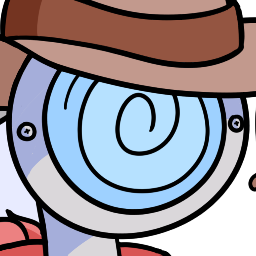
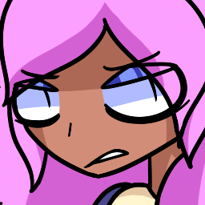
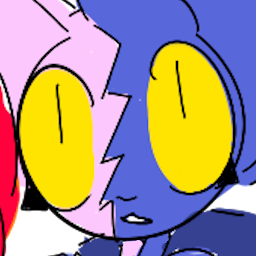

| AMB-R0.53 | ||
|---|---|---|
| 
Warforged Oathbreaker
Likes: Cowboys and horses, swords, the great outdoors Whiteslate's stablehand. A former military android, now living the good life as a "rootin', tootin' cowboy." It's a pleasant surprise to her that wildlife even exist in purgatory. Her conversational skills are often erratic and confusing, not unlike that of a "Self-aware AI." Some of the residents suspect this to be an act. | ||
| Scourge the Malevolent | ||
|---|---|---|
| 
Shifter Monk
Likes: Nature, honing her craft, quiet moments of peace The mayor of Whiteslate. A devout follower of Anubis. Her time as a traveling doctor has given her the determination to act as a leader when necessary, even despite her antisocial tendacies. In her (now-endless) free time, she can be seen idly practicing her many hobbies.
Curiosity is her fatal flaw. | ||
| Ashen Winds | ||
|---|---|---|
| 
Tabaxi Druid
Likes: Cooking, Scourge, hanging out with her friends Scourge's closest friend. A fervent optimist, despite how unlucky her life has been up to this point. Her headstrong attitude is admirable, if seemingly naïve. Her wildfire spirit, Mapurra, is viewed by many as a town mascot. Despite being made of fire, they're actually quite pleasant to pet. | ||
| Chaos | ||
|---|---|---|
|
Changeling Artificer
Likes: Chaos, bartending, entertaining themselves The owner and barkeep of Whiteslate's main tavern, "The Flamin' Yawn." Despite their general "laid-back smartass" demeanor, they often act as a listening ear for the residents who need it. Ash and Scourge are their most frequent visitors, though for different reasons. To them, entertainment is a virtue above all else. | ||
| Maksi Nomroh | ||
|---|---|---|
|
Dragonborn Bard
Likes: Metal music, silence An outcast of purgatory. Apparently, something happened to create a rift between her and the various residents of Whiteslate. In any case, wherever she may be, she keeps to herself. | ||
| The Protagonist | ||
|---|---|---|
 What will you become, as a resident of purgatory? What answers will you uncover?
What will you become, as a resident of purgatory? What answers will you uncover?
As a player, your form and history are up to your discretion. I do hope you enjoy a taste of the creation process. It's up to you to find a happy ending, if one even exists. | ||